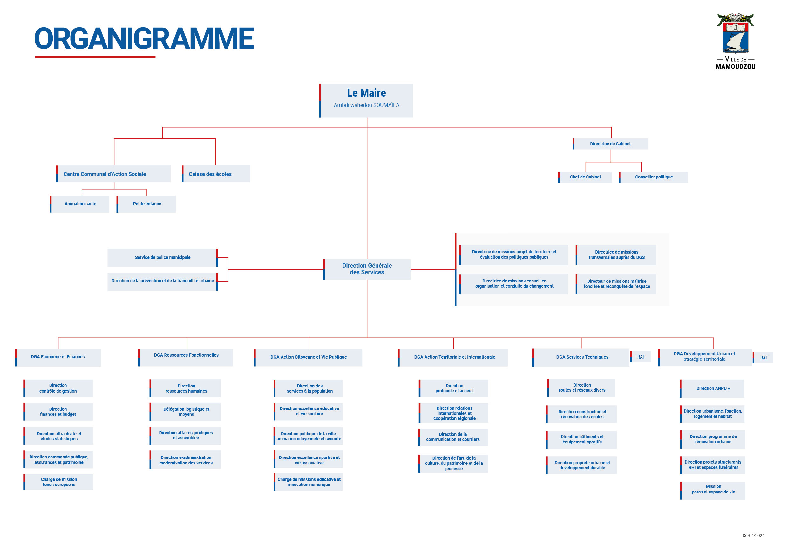

Notre Ville
Présentation de la ville de Mamoudzou
Chers Collaborateurs,
C'est avec un immense plaisir que je vous souhaite le bienvenue au sein de la grande famille de la Ville de Mamoudzou.
En rejoignant notre collectivité, vous devenez des acteurs essentielles au service de notre population.
Votre engagement, vos compétences et votre sens du service public seront des atouts précieux pour
répondre aux
nombreux défis de notre territoire et contribuer au développement harmonieux et solidaire de notre belle commune.
Mamoudzou est une ville en pleine transformation , dynamique et tournée vers l'avenir. Vous y
trouverez un cadre de travail stimulant, des équipes investies et solidaires, ainsi que de nombreuses
opportunités pour vous épanouir professionnellement.
Je vous invite à faire preuve de curiosité, de rigueur et d'initiative. C'est ensemble dans un
esprit de coopération, que nous pourrons continuer à bâtir un service public de qualité, proche des citoyens.
Ambdilwahedou SOUMAILA, Maire
Le Directeur Général des Services (DGS)
Sous l'autorité directe du Maire, le directeur général des services
dirige, coordonne et anime l'ensemble des services de la ville en
veillant à mettre en œuvre les orientations préalablement définies
par les élus. Véritable chef d'orchestre des services municipaux, il
pilote la stratégie d'optimisation des ressources, veille à la légalité
des actes et apporte son conseil stratégique au Maire. Il anime les
comités de directions et participe aux différentes réunions de
directions et participe aux différentes réunions internes et externes,
représentant le Maire auprès des partenaires institutionnels.
Philipe Ramon, DGS
📊 Organigramme
Voici notre Organigramme:
- Maire
- Directeur Général des Services
- Services Administratifs
- Services Techniques
- Services Sociaux
🧩 Services municipaux
- État civil
- Urbanisme
- Ressources humaines
- Finances
- Services techniques